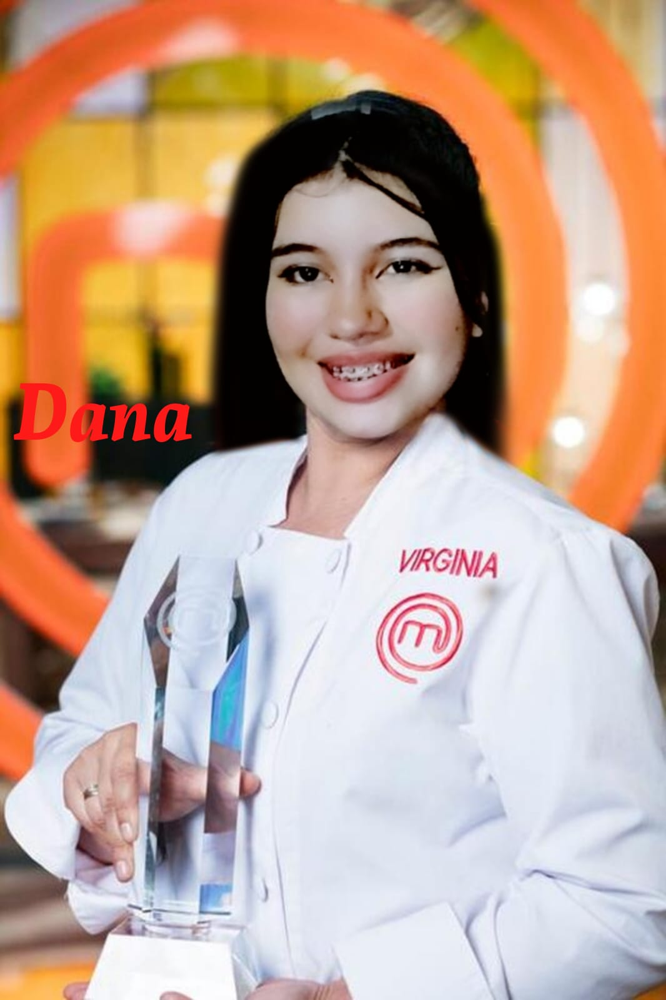
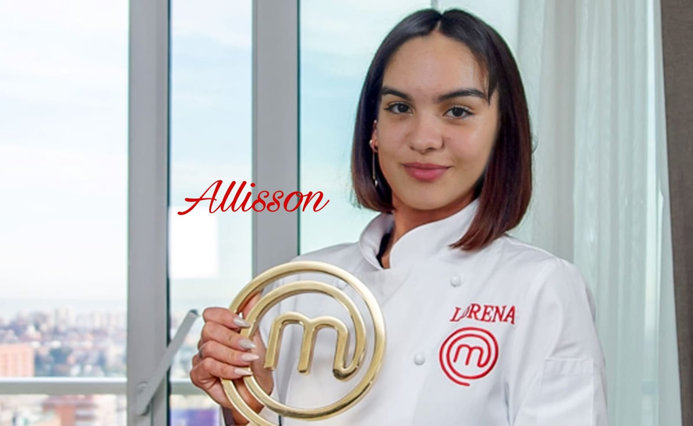
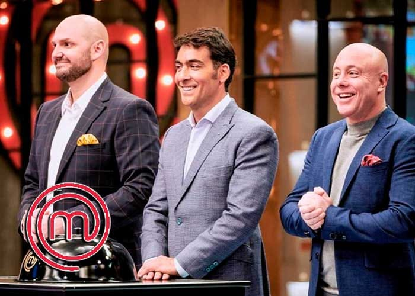

es un programa de televisión colombiano
de competición gastronómica
estrenado en el 2014

Cuando me dicen que me quedó bien el SunTea:

Cuando mi mamá me pone a hervir agua, automaticamente yo:

cuenta con la participación de los chefs de renombre nacional e internacional
Jorge Rausch, Nicolás de Zubiría y Christopher Carpentier, como jurados